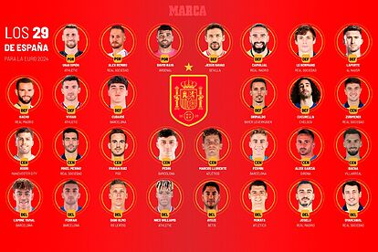
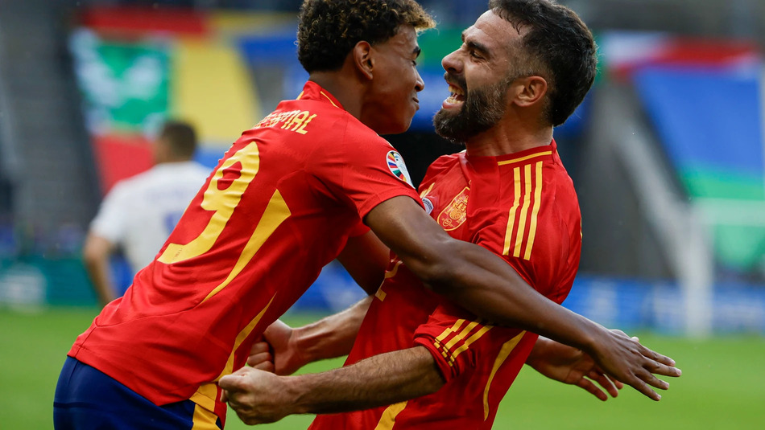
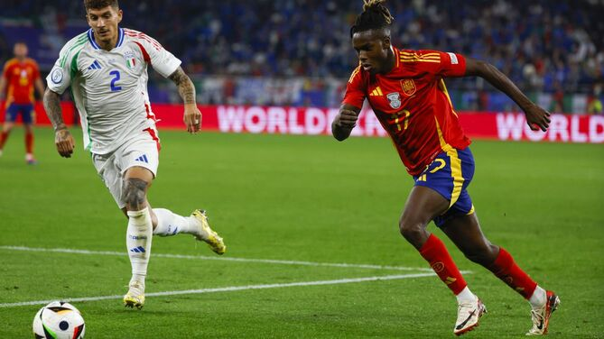

España 2024
Eurocopa
Convocatoria
Porteros
Unai Simón (Athletic), Raya (Arsenal) y Remiro (Real Sociedad).
Defensas
Carvajal (Real Madrid), Jesús Navas (Sevilla), Laporte (Al Nassr), Le Normand (Real Sociedad), Nacho (Real Madrid), Vivian (Athletic), Grimaldo (Leverkusen) y Cucurella (Chelsea).
Mediocentros
Rodrigo (Manchester City), Zubimendi (Real Sociedad), Mikel Merino (Real Sociedad), Fabián (PSG), Pedri (Barcelona), Alex Baena (Villarreal) y Fermín (Barcelona).
Delanteros
Ferran Torres(Barcelona), Dani Olmo (Leipzig), Nico Williams (Athletic), Morata (Atlético), Joselu (Real Madrid), Oyarzabal (Real Sociedad), Lamine Yamal (Barcelona) y Ayoze (Betis).

Partidos
Calendario y grupo de Croacia en la Eurocopa
Grupo B: España, Croacia, Italia, Albania
Sábado 15 de junio
18:00 España-Croacia

Jueves 20 de junio
21:00 España-Italia
